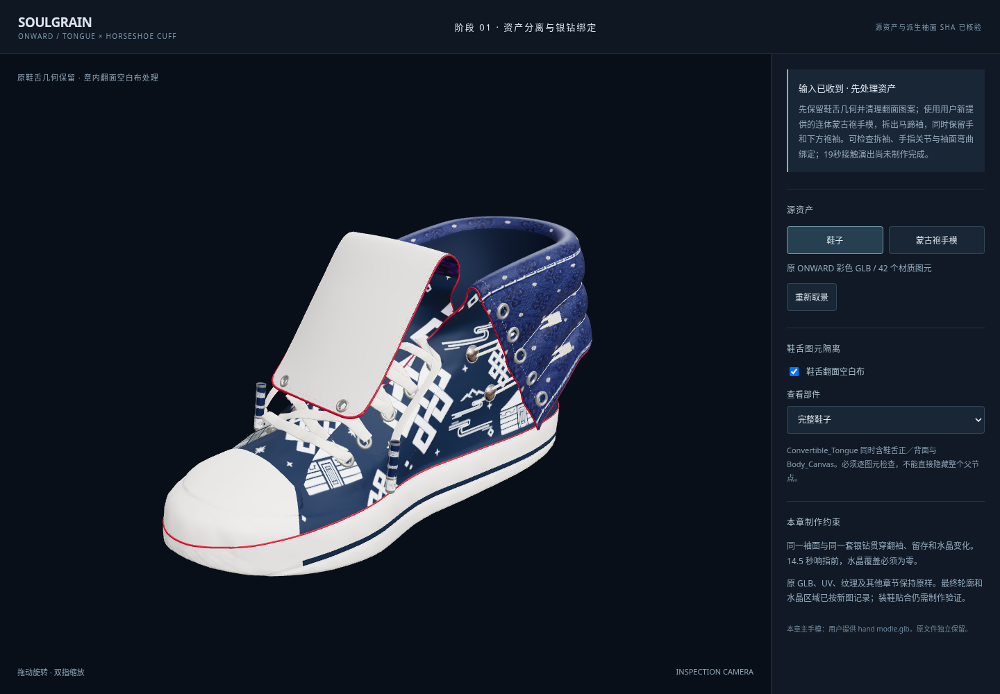
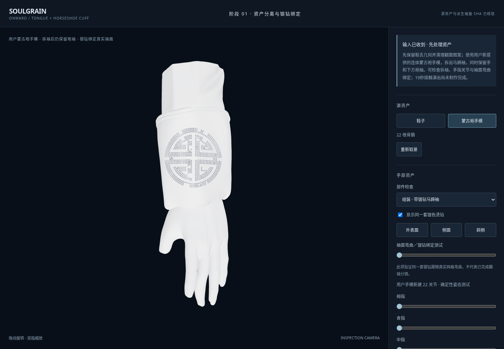
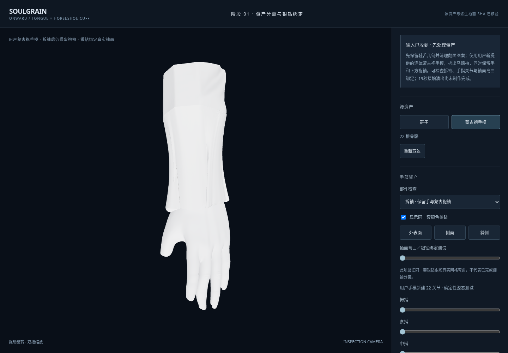
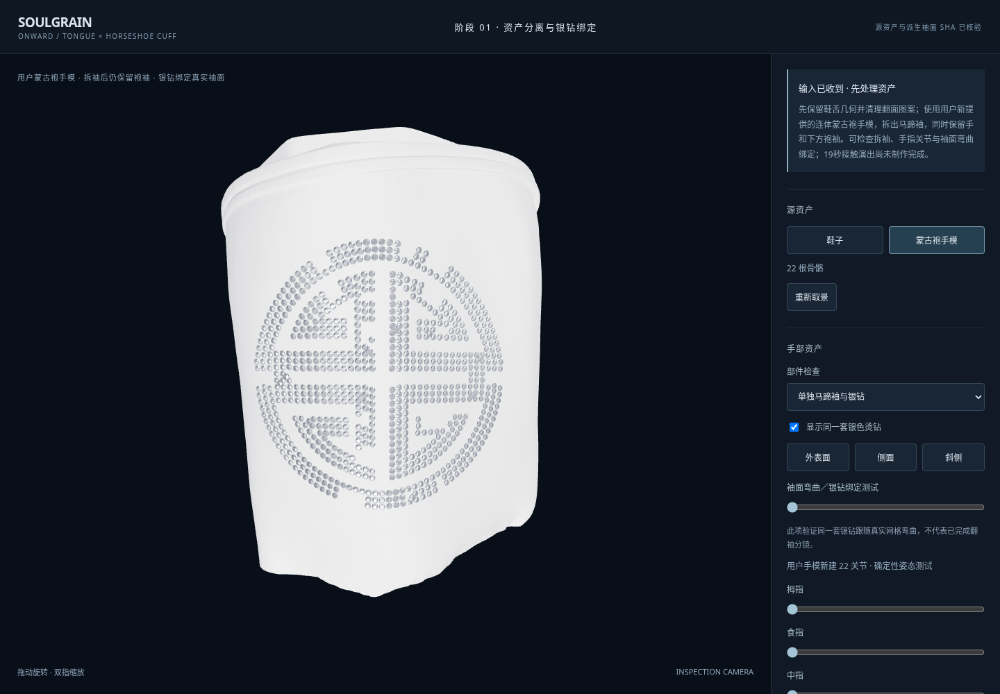
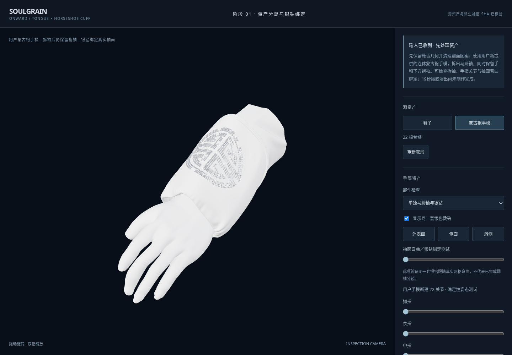
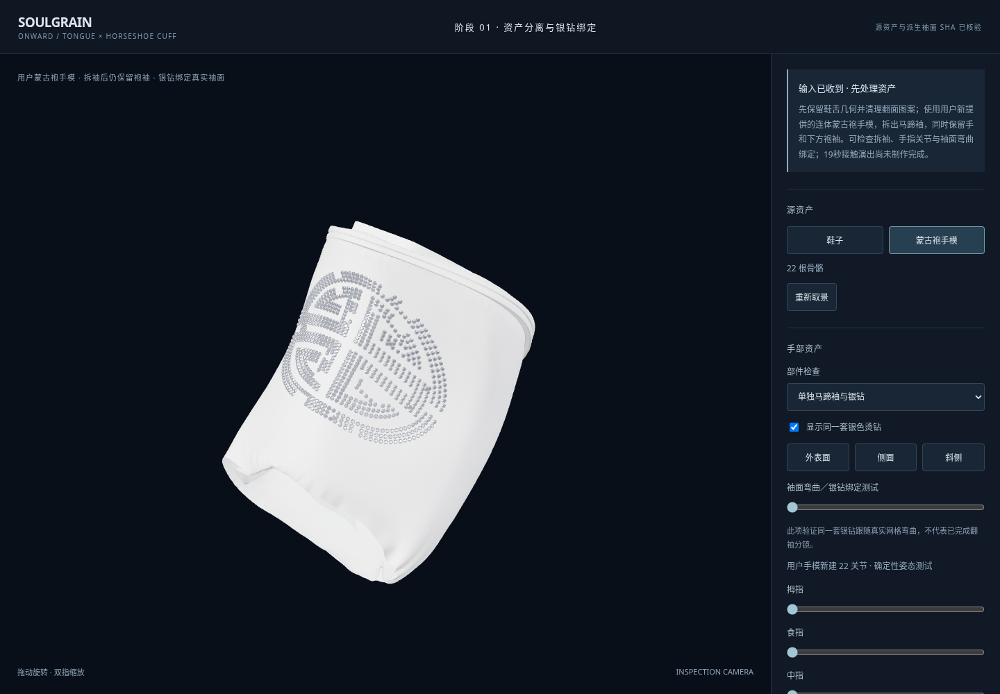

SOULGRAIN / ONWARD
鞋舌 × 马蹄袖 · 第一阶段资产准备
原鞋舌保留，只清理翻面图案。用户上传的蒙古袍手模已拆出马蹄袖，拆袖后仍保留袍袖；同一组银钻绑定真实袖面。这里展示资产处理与关节／绑定测试，完整19秒抓取、翻袖、抽手与水晶觉醒尚未完成。
以下为实际 WebGL 操作录屏，可用 Safari 播放。录制环境为 Linux Chromium / SwiftShader；触控检查为 iPad 视口模拟，尚未进行 iPad Safari 实机验收。

01 · 原鞋舌仍在。只隔离处理其翻面颜色，未改原始顶点、UV、索引和纹理文件。
02 · 使用用户原手模；马蹄袖上已有完整银色圆形纹样，约75mm外径。
03 · 拆掉的是马蹄袖；手和下面的袍袖保留。新露出的遮挡内层为重建布面。
04 · 同一马蹄袖、同一组785个图像读取钻位；并非白底图片贴片。
05 · 在用户原手网格上建立22个关节。此图是蒙皮检查，不是已经验收的捏取动作。
06 · 袖面弯曲绑定测试。银钻的身份、尺寸和表面偏移保持一致；不将此测试冒充完整翻袖镜头。最终参考已记录为约158 × 103mm、银色圆形纹样约75mm、上下水晶布面区域。下一步仍需完成装鞋轮廓校准、接触姿态、连续翻袖、抽手、响指与水晶织物材质；不会用旧紫色鞋舌代替最新蓝色晶体设计。
独立分支：feat/tongue-horseshoe-sleeve-v1 · 基线：0bbbc82 · 未推送、未部署。